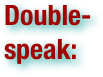
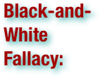
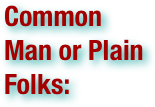
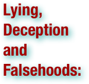
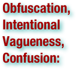
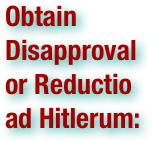
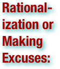
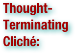

Propaganda Terms
Please scan the terms to find what you are looking for - they are not in order!
.pdf (. . . )


A concerted set of messages aimed at influencing the opinions or behavior of large numbers of people. (wiktionary.org)

The addressing of arguments to someone with the intention of changing their mind or convincing them of a certain point of view, course of action etc. (wiktionary.org)

An inaccurate statement or statistic believed to be true because of broad repetition, especially if cited in the media; an interesting item of trivia. (wiktionary.org)

Inclination towards something; predisposition, partiality, prejudice, preference, predilection. (wiktionary.org)

An adverse judgement or opinion formed beforehand or without knowledge of the facts; any preconceived opinion or feeling, whether positive or negative; an irrational hostile attitude, fear or hatred towards a particular group, race or religion; the damage caused by such fear or hatred. (wiktionary.org)

To give public notice of; to announce publicly; as to advertise goods for sale, a lost article, the sailing day of a vessel, a political meeting; to provide information about in communications media, especially about goods or services for sale; to provide information about a person or goods and services to influence others. (wiktionary.org)

Communication by a person or an organization with the purpose of creating a favorable public image; commonly referred to as PR. (wiktionary.org)

Motivated, especially inappropriately, by political (electoral or other party political) calculation (wiktionary.org)

Black propaganda is false information and material that purports to be from a source on one side of a conflict, but is actually from the opposing side. It is typically used to vilify, embarrass or misrepresent the enemy. . . Black propaganda purports to emanate from a source other than the true source. This type of propaganda is associated with covert psychological operations. Sometimes the source is concealed or credited to a false authority and spreads lies, fabrications, and deceptions. Black propaganda is the "big lie," including all types of creative deceit. Ultimately, black propaganda relies on the willingness of the receiver to accept the credibility of the source. If the creators or senders of the black propaganda message do not adequately understand their intended audience, the message may be misunderstood, seem suspicious, or fail altogether. Governments will generally conduct black propaganda operations for two different reasons. First, by utilizing black propaganda a government is more likely to succeed in convincing their target audience that the information that they are seeking to influence them with is disguised, and that its motivations are not apparent. Second, there are diplomatic reasons behind the use of black propaganda. Black propaganda is necessary in order to obfuscate a government's involvement in activities that may be detrimental to its foreign policies. (wikipedia.org)

White propaganda is propaganda which truthfully states its origin. It is the most common type of propaganda. It generally comes from an openly identified source, and is characterized by gentler methods of persuasion than black propaganda and grey propaganda. It typically uses standard public relations techniques and one-sided presentation of an argument. (wikipedia.org)

Grey propaganda is propaganda without any identifiable source or author. A major application of grey propaganda is making enemies believe falsehoods using straw arguments: As phase one, to make someone believe "A", one releases as grey propaganda "B", the opposite of "A". In phase two, "B" is discredited using some straw man. The enemy will then assume "A" to be true. (wikipedia.org)

The promotion, distribution and selling of a product or service; includes market research and advertising. (wiktionary.org)


Any language deliberately constructed to disguise or distort its actual meaning, often by employing euphemism or ambiguity. Typically used by governments or large institutions. (wiktionary.org)

To present, describe, or interpret, or to introduce a bias or slant so as to give something a favorable or advantageous appearance. (wiktionary.org)

A Latin phrase that has come to mean attacking one's opponent, as opposed to attacking their arguments. (wikipedia.org)

This argument approach uses tireless repetition of an idea. An idea, especially a simple slogan, that is repeated enough times, may begin to be taken as the truth. This approach works best when media sources are limited or controlled by the propagator. (wikipedia.org)

Appeals to authority cite prominent figures to support a position, idea, argument, or course of action. (wikipedia.org)

Appeals to fear and seeks to build support by instilling anxieties and panic in the general population, for example, Joseph Goebbels exploited Theodore Kaufman's Germany Must Perish! to claim that the Allies sought the extermination of the German people. (wikipedia.org)

Using loaded or emotive terms to attach value or moral goodness to believing the proposition. Used in biased or misleading ways. (wikipedia.org)

Bandwagon and "inevitable-victory" appeals attempt to persuade the target audience to join in and take the course of action that "everyone else is taking". (wikipedia.org)


Invites those not already on the bandwagon to join those already on the road to certain victory. Those already or at least partially on the bandwagon are reassured that staying aboard is their best course of action. (wikipedia.org)

This technique reinforces people's natural desire to be on the winning side. This technique is used to convince the audience that a program is an expression of an irresistible mass movement and that it is in their best interest to join. (wikipedia.org)

The type of propaganda that deals with famous people or depicts attractive, happy people. This makes other people think that if they buy a product or follow a certain ideology, they too will be happy or successful. (wikipedia.org)

The repeated articulation of a complex of events that justify subsequent action. The descriptions of these events have elements of truth, and the "big lie" generalizations merge and eventually supplant the public's accurate perception of the underlying events. After World War I the German Stab in the back explanation of the cause of their defeat became a justification for Nazi re-militarization and revanchist aggression. (wikipedia.org)


Presenting only two choices, with the product or idea being propagated as the better choice. For example: "You're either with us, or against us...." (wikipedia.org)

All vertebrates, including humans, respond to classical conditioning. That is, if object A is always present when object B is present and object B causes a negative physical reaction (e.g., disgust, pleasure) then we will when presented with object A when object B is not present, we will experience the same feelings. (wikipedia.org)

People desire to be consistent. Suppose a pollster finds that a certain group of people hates his candidate for senator but love actor A. They use actor A's endorsement of their candidate to change people's minds because people cannot tolerate inconsistency. They are forced to either to dislike the actor or like the candidate. (wikipedia.org)


The "plain folks" or "common man" approach attempts to convince the audience that the propagandist's positions reflect the common sense of the people. It is designed to win the confidence of the audience by communicating in the common manner and style of the target audience. Propagandists use ordinary language and mannerisms (and clothe their message in face-to-face and audiovisual communications) in attempting to identify their point of view with that of the average person. For example, a propaganda leaflet may make an argument on a macroeconomic issue, such as unemployment insurance benefits, using everyday terms: "Given that the country has little money during this recession, we should stop paying unemployment benefits to those who do not work, because that is like maxing out all your credit cards during a tight period, when you should be tightening your belt." (wikipedia.org)


A cult of personality arises when an individual uses mass media to create an idealized and heroic public image, often through unquestioning flattery and praise. The hero personality then advocates the positions that the propagandist desires to promote. For example, modern propagandists hire popular personalities to promote their ideas and/or products. (wikipedia.org)

Making individuals from the opposing nation, from a different ethnic group, or those who support the opposing viewpoint appear to be subhuman (e.g., the Vietnam War-era term "gooks" for National Front for the Liberation of South Vietnam aka Viet Cong, or "VC", soldiers), worthless, or immoral, through suggestion or false accusations. Dehumanizing is also a termed used synonymously with demonizing, the latter usually serves as an aspect of the former. (wikipedia.org)

This technique hopes to simplify the decision making process by using images and words to tell the audience exactly what actions to take, eliminating any other possible choices. Authority figures can be used to give the order, overlapping it with the Appeal to Authority technique, but not necessarily. The Uncle Sam "I want you" image is an example of this technique. (wikipedia.org)


The creation or deletion of information from public records, in the purpose of making a false record of an event or the actions of a person or organization, including outright forgery of photographs, motion pictures, broadcasts, and sound recordings as well as printed documents. (wikipedia.org)

Is used to increase a person's latitude of acceptance. For example, if a salesperson wants to sell an item for $100 but the public is only willing to pay $50, the salesperson first offers the item at a higher price (e.g., $200) and subsequently reduces the price to $100 to make it seem like a good deal. (wikipedia.org)

The use of an event that generates euphoria or happiness, or using an appealing event to boost morale. Euphoria can be created by declaring a holiday, making luxury items available, or mounting a military parade with marching bands and patriotic messages. (wikipedia.org)

An attempt to influence public perception by disseminating negative and dubious/false information designed to undermine the credibility of their beliefs. (wikipedia.org)

An attempt to justify an action on the grounds that doing so will make one more patriotic, or in some way benefit a country, group or idea the targeted audience supports. (wikipedia.org)

Often used by recruiters and salesmen. For example, a member of the opposite sex walks up to the victim and pins a flower or gives a small gift to the victim. The victim says thanks and now they have incurred a psychological debt to the perpetrator. The person eventually asks for a larger favor (e.g., a donation or to buy something far more expensive). The unwritten social contract between the victim and perpetrator causes the victim to feel obligated to reciprocate by agreeing to do the larger favor or buy the more expensive gift. (wikipedia.org)

Glittering generalities are emotionally appealing words that are applied to a product or idea, but present no concrete argument or analysis. This technique has also been referred to as the PT Barnum effect. (wikipedia.org)

A half-truth is a deceptive statement, which may come in several forms and includes some element of truth. The statement might be partly true, the statement may be totally true but only part of the whole truth, or it may utilize some deceptive element, such as improper punctuation, or double meaning, especially if the intent is to deceive, evade, blame or misrepresent the truth. (wikipedia.org)

A euphemism is used when the propagandist attempts to increase the perceived quality, credibility, or credence of a particular ideal. A Dysphemism is used when the intent of the propagandist is to discredit, diminish the perceived quality, or hurt the perceived righteousness of the Mark. By creating a "label" or "category" or "faction" of a population, it is much easier to make an example of these larger bodies, because they can uplift or defame the Mark without actually incurring legal-defamation. Example: "Liberal" is a dysphemism intended to diminish the perceived credibility of a particular Mark. By taking a displeasing argument presented by a Mark, the propagandist can quote that person, and then attack "liberals" in an attempt to both (1) create a political battle-ax of unaccountable aggression and (2) diminish the quality of the Mark. If the propagandist uses the label on too-many perceivably credible individuals, muddying up the word can be done by broadcasting bad-examples of "liberals" into the media. Labeling can be thought of as a sub-set of Guilt by Association, another logical fallacy. (wikipedia.org)

If a person's message is outside the bounds of acceptance for an individual and group, most techniques will engender psychological reactance (simply hearing the argument will make the message even less acceptable). There are two techniques for increasing the bounds of acceptance. First, one can take a more even extreme position that will make more moderate positions seem more acceptable. This is similar to the Door-in-the-Face technique. Alternatively, one can moderate one's own position to the edge of the latitude of acceptance and then over time slowly move to the position that was previously. (wikipedia.org)

Used to recruit members to a cult or ideology by having a group of individuals cut off a person from their existing social support and replace it entirely with members of the group who deliberately bombard the person with affection in an attempt to isolate the person from their prior beliefs and value system—see Milieu control. (wikipedia.org)


Lying and deception can be the basis of many propaganda techniques including Ad Homimen arguments, Big-Lie, Defamation, Door-in-the-Face, Half-truth, Name-calling or any other technique that is based on dishonesty or deception. For example, many politicians have been found to frequently stretch or break the truth. (wikipedia.org)

According to Adolf Hitler "The most brilliant propagandist technique will yield no success unless one fundamental principle is borne in mind constantly - it must confine itself to a few points and repeat them over and over." This idea is consistent with the principle of classical conditioning as well as the idea of "Staying on Message." (wikipedia.org)

An attempt to control the social environment and ideas through the use of social pressure. (wikipedia.org)

Propagandists use the name-calling technique to start fears and arouse prejudices in their hearers in the intent that the bad names will cause hearers to construct a negative opinion about a group or set of beliefs or ideas that the propagandist wants hearers to denounce. The method is intended to provoke conclusions about a matter apart from impartial examinations of facts. Name-calling is thus a substitute for rational, fact-based arguments against the an idea or belief on its own merits. (wikipedia.org)


Generalities are deliberately vague so that the audience may supply its own interpretations. The intention is to move the audience by use of undefined phrases, without analyzing their validity or attempting to determine their reasonableness or application. The intent is to cause people to draw their own interpretations rather than simply being presented with an explicit idea. In trying to "figure out" the propaganda, the audience forgoes judgment of the ideas presented. Their validity, reasonableness and application may still be considered. (wikipedia.org)


This technique is used to persuade a target audience to disapprove of an action or idea by suggesting that the idea is popular with groups hated, feared, or held in contempt by the target audience. Thus if a group that supports a certain policy is led to believe that undesirable, subversive, or contemptible people support the same policy, then the members of the group may decide to change their original position. This is a form of bad logic, where a is said to include X, and b is said to include X, therefore, a = b. (wikipedia.org)

Operant conditioning involves learning through imitation. For example, watching an appealing person buy products or endorse positions teaches a person to buy the product or endorse the position. Operant conditioning is the underlying principle behind the Ad Nauseam, Slogan and other repetition public relations campaigns. (wikipedia.org)

Favorable generalities are used to provide simple answers to complex social, political, economic, or military problems. (wikipedia.org)

Enforced reduction of discussion by use of overly simplistic phrases or arguments (e.g., "There is no alternative to war.") (wikipedia.org)

Selectively editing quotes to change meanings—political documentaries designed to discredit an opponent or an opposing political viewpoint often make use of this technique. (wikipedia.org)


Individuals or groups may use favorable generalities to rationalize questionable acts or beliefs. Vague and pleasant phrases are often used to justify such actions or beliefs. (wikipedia.org)

Presenting data or issues that, while compelling, are irrelevant to the argument at hand, and then claiming that it validates the argument. (wikipedia.org)

This is the repeating of a certain symbol or slogan so that the audience remembers it. This could be in the form of a jingle or an image placed on nearly everything in the picture/scene. (wikipedia.org)

Assigning blame to an individual or group, thus alleviating feelings of guilt from responsible parties and/or distracting attention from the need to fix the problem for which blame is being assigned. (wikipedia.org)

A slogan is a brief, striking phrase that may include labeling and stereotyping. Although slogans may be enlisted to support reasoned ideas, in practice they tend to act only as emotional appeals. Opponents of the US's invasion and occupation of Iraq use the slogan "blood for oil" to suggest that the invasion and its human losses was done to access Iraq's oil riches. On the other hand, supporters who argue that the U.S. should continue to fight in Iraq use the slogan "cut and run" to suggest withdrawal is cowardly or weak. (wikipedia.org)

This technique attempts to arouse prejudices in an audience by labeling the object of the propaganda campaign as something the target audience fears, hates, loathes, or finds undesirable. For instance, reporting on a foreign country or social group may focus on the stereotypical traits that the reader expects, even though they are far from being representative of the whole country or group; such reporting often focuses on the anecdotal. In graphic propaganda, including war posters, this might include portraying enemies with stereotyped racial features. (wikipedia.org)

A straw man argument is an informal fallacy based on misrepresentation of an opponent's position. To "attack a straw man" is to create the illusion of having refuted a proposition by substituting a superficially similar proposition (the "straw man"), and refuting it, without ever having actually refuted the original position. (wikipedia.org)


Testimonials are quotations, in or out of context, especially cited to support or reject a given policy, action, program, or personality. The reputation or the role (expert, respected public figure, etc.) of the individual giving the statement is exploited. The testimonial places the official sanction of a respected person or authority on a propaganda message. This is done in an effort to cause the target audience to identify itself with the authority or to accept the authority's opinions and beliefs as its own. (wikipedia.org)


Works on the principle that people are more willing to accept an argument from a seemingly independent source of information than from someone with a stake in the outcome. It is a marketing strategy commonly employed by Public Relations (PR) firms, that involves placing a premeditated message in the "mouth of the media." Third-party technique can take many forms, ranging from the hiring of journalists to report the organization in a favorable light, to using scientists within the organization to present their perhaps prejudicial findings to the public. Frequently astroturf groups or front groups are used to deliver the message. Foreign governments, particularly those that own marketable commercial products or services, often promote their interests and positions through the advertising of those goods because the target audience is not only largely unaware of the forum as vehicle for foreign messaging but also willing to receive the message while in a mental state of absorbing information from advertisements during television commercial breaks, while reading a periodical, or while passing by billboards in public spaces. A prime example of this messaging technique is advertising campaigns to promote international travel. While advertising foreign destinations and services may stem from the typical goal of increasing revenue by drawing more tourism, some travel campaigns carry the additional or alternative intended purpose of promoting good sentiments or improving existing ones among the target audience towards a given nation or region. It is common for advertising promoting foreign countries to be produced and distributed by the tourism ministries of those countries, so these ads often carry political statements and/or depictions of the foreign government's desired international public perception. . . By depicting their destinations, airlines, and other services in a favorable and pleasant light, countries market themselves to populations abroad in a manner that could mitigate prior public impressions. (wikipedia.org)Works on the principle that people are more willing to accept an argument from a seemingly independent source of information than from someone with a stake in the outcome. It is a marketing strategy commonly employed by Public Relations (PR) firms, that involves placing a premeditated message in the "mouth of the media." Third-party technique can take many forms, ranging from the hiring of journalists to report the organization in a favorable light, to using scientists within the organization to present their perhaps prejudicial findings to the public. Frequently astroturf groups or front groups are used to deliver the message. (wikipedia.org)


A commonly used phrase, sometimes passing as folk wisdom, used to quell cognitive dissonance. (wikipedia.org)

Also known as association, this is a technique that involves projecting the positive or negative qualities of one person, entity, object, or value onto another to make the second more acceptable or to discredit it. It evokes an emotional response, which stimulates the target to identify with recognized authorities. Often highly visual, this technique often utilizes symbols (e.g. swastikas) superimposed over other visual images (e.g. logos). These symbols may be used in place of words. (wikipedia.org)

Richard Crossman, the British Deputy Director of Psychological Warfare Division (PWD) for the Supreme Headquarters Allied Expeditionary Force (SHAEF) during the Second World War said "In propaganda truth pays... It is a complete delusion to think of the brilliant propagandist as being a professional liar. The brilliant propagandist is the man who tells the truth, or that selection of the truth which is requisite for his purpose, and tells it in such a way that the recipient does not think he is receiving any propaganda... [...] The art of propaganda is not telling lies, bur rather selecting the truth you require and giving it mixed up with some truths the audience wants to hear." (wikipedia.org)

This technique is used when the idea the propagandist wants to plant would seem less credible if explicitly stated. The concept is instead repeatedly assumed or implied. (wikipedia.org)

These are words in the value system of the target audience that produce a positive image when attached to a person or issue. Peace, happiness, security, wise leadership, freedom, "The Truth", etc. are virtue words. Many see religiosity as a virtue, making associations to this quality affectively beneficial. Their use is considered of the Transfer propaganda technique. (wikipedia.org)